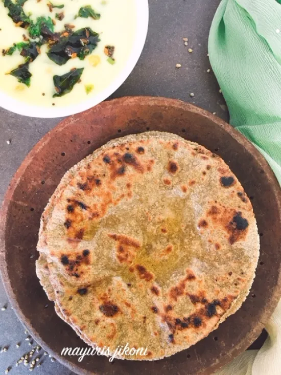
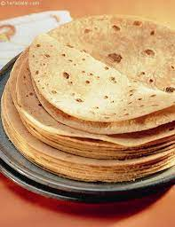
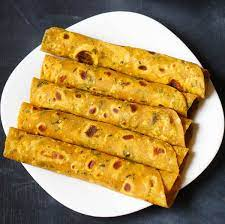
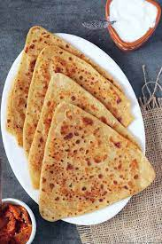
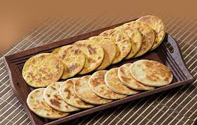

નાસ્તાની રેસીપી |
| ક્રમ |
વાંન્ગી ના નામ અને દેખાવ |
વાંન્ગી ની માહિતી |
| 1. |

રોટલા |
ઢોકળા એ એક સ્વાદિષ્ટ સ્પોન્જ વાનગી છે જે ભારતના ગુજરાત રાજ્ય અને તેની નજીકના રાજ્યોના ભાગોમાં છે.
[1] અને સમગ્ર દેશમાં લોકપ્રિય છે. તે કેક જેવી સુસંગતતા માટે બાફવામાં આવે છે તે આથો બેટર સાથે બનાવવામાં આવે છે. કઠોળ બેંગાલ ગ્રામ સાથે ચોખાનું મિશ્રણ ધરાવે છે.
[2] પરંતુ ચણા, કબૂતર વટાણા અથવા અડદના દાળો દ્વારા બદલવામાં આવેલા ચણા સાથેના ઘણા પ્રકારો છે.
[3]કારણ કે તે એક લોકપ્રિય વાનગી અને મનપસંદ શાકાહારી નાસ્તો છે, ઢોકળામાં સોજી, ચોખા પાવડર અથવા ચીઝ ઢોકળા જેવી ઘણી વિવિધતાઓ છે. રુંવાટીવાળું, ઓછી કેલરી અને પ્રોટીનથી ભરપૂર, તે આશ્ચર્યજનક નથી કે ઢોકળા ગુજરાતનો મુખ્ય ખોરાક છે.. |
| 2. |

રોટલી |
સમોસા મૂળ મધ્ય એશિયાનો લોકપ્રિય નાસ્તો છે. તેણે ભારત તરફના વેપારી માર્ગોના મુસ્લિમ વેપારીઓની મદદથી આગળ મુસાફરી કરી.
[1] તે ભારતીય ઉપખંડ તેમજ દક્ષિણપૂર્વ એશિયા, મધ્ય એશિયા, દક્ષિણપશ્ચિમ એશિયા, અરેબિયન દ્વીપકલ્પ, ભૂમધ્ય સમુદ્ર, આફ્રિકાનું હોર્ન, ઉત્તર આફ્રિકા, તેમજ દક્ષિણ આફ્રિકામાં પ્રખ્યાત છે.
[2]સમોસા સર્વ-હેતુના લોટ (સ્થાનિક રીતે મેડા તરીકે ઓળખાય છે) વડે તૈયાર કરવામાં આવે છે અને તેમાં ભરણમાં ભરાય છે, ઘણીવાર પાસાદાર અને રાંધેલા અથવા છૂંદેલા બાફેલા બટાકા (પ્રાધાન્યમાં પાસાદાર) નું મિશ્રણ, ડુંગળી, લીલા વટાણા, દાળ, આદુ, મસાલા અને લીલા મરચું.સમોસા સામાન્ય રીતે વનસ્પતિ તેલમાં ગોલ્ડન બ્રાઉન રંગના તળેલા હોય છે.
|
| 3. |

થેપલા |
ફાફડા (ગુજરાતી: ફાફડા) એ ગુજરાતનો એક લોકપ્રિય ભારતીય નાસ્તો છે. મોટાભાગે તહેવારો દરમિયાન ખાવામાં આવતા ફાફડાનો આકાર લંબચોરસ અને પીળો રંગનો હોય છે.
[1]ફાફડા દશેરા નામના તહેવારથી પ્રખ્યાત થયા. પરંપરાગત રીતે, ગુજરાતી ભોજનમાં ફાફડા અને જલેબી સૌથી વધુ માંગવામાં આવતા મીઠા અને મીઠાના મિશ્રણ છે.
[2] બે નાસ્તા ગુજરાતીઓમાં નાસ્તાની આઇટમ તરીકે લોકપ્રિય છે.
|
| 4. |

પરાઠા |
[1]સેવ મમરા (મુમરા) જેને મિશ્રણ પણ કહેવાય છે, તે એક ભારતીય નાસ્તો છે. તે મસાલેદાર સૂકા ઘટકોનું મિશ્રણ છે જેમ કે પફ્ડ રાઇસ (મમરા), સેવરી ફ્રાઈડ નૂડલ્સ (સેવ) અને મગફળી.
[2] કેપ્સિકમ, ડુંગળી અથવા અથાણાંવાળી કેરી ઉમેરીને નાસ્તાની પ્રાદેશિક ભિન્નતા બદલાય છે.
[3] તે ભારતના મોટાભાગના ભાગોમાં ઉપલબ્ધ છે, જોકે તે વિવિધ પ્રદેશોમાં જુદા જુદા નામોથી ઓળખાય છે.
|
| 5. |

ભાખરી |
[1]જલેબી ભારત, પાકિસ્તાન, નેપાળ અને બાંગ્લાદેશમાં ખૂબ જ સામાન્ય અને લોકપ્રિય મીઠાઈ છે. જલેબી એક ચાસણીવાળી મીઠાઈ છે જેનો આકાર થોડો મોટો, અસ્તવ્યસ્ત પ્રેટ્ઝેલ જેવો છે અને તે પરંપરાગત રીતે ભારત અને પાકિસ્તાનમાં તૈયાર કરવામાં આવે છે. સારી રીતે બનાવેલી જલેબીમાં મીઠો સ્વાદ સાથે ખાટું તત્વ હોય છે.
[2]લગ્ન, તહેવાર કે જન્મદિવસ કોઈપણ ખાસ પ્રસંગે જલેબી હૉટ ફેવરિટ છે. જલેબી એ એક તળેલી મીઠી છે જે મેડાના લોટમાંથી બનાવવામાં આવે છે અને પછી ચાસણીમાં પલાળવામાં આવે છે. તે તેજસ્વી નારંગી અથવા પીળો રંગનો છે પણ સફેદ રંગમાં પણ ઉપલબ્ધ છે. તે ગરમ અથવા ઠંડા પીરસી શકાય છે અને સ્ફટિકીકૃત સુગરવાળા બાહ્ય આવરણ સાથે કંઈક અંશે ચ્યુવી ટેક્સચર ધરાવે છે.
[3]ખાંડ આંશિક રીતે આથો આવે છે જે વાનગીમાં સ્વાદ ઉમેરે છે. આવી જ એક મીઠાઈ ઈમરતી છે, જે લાલ-નારંગી રંગની અને સ્વાદમાં મીઠી હોય છે, જે ઉત્તર પ્રદેશ, રાજસ્થાન, મધ્ય પ્રદેશ વગેરે જેવા ઉત્તર ભારતના રાજ્યોમાં બનાવવામાં આવે છે. ઓરિસ્સામાં જલેબી પણ ક્યારેક ચેનામાંથી બનાવવામાં આવે છે.
|